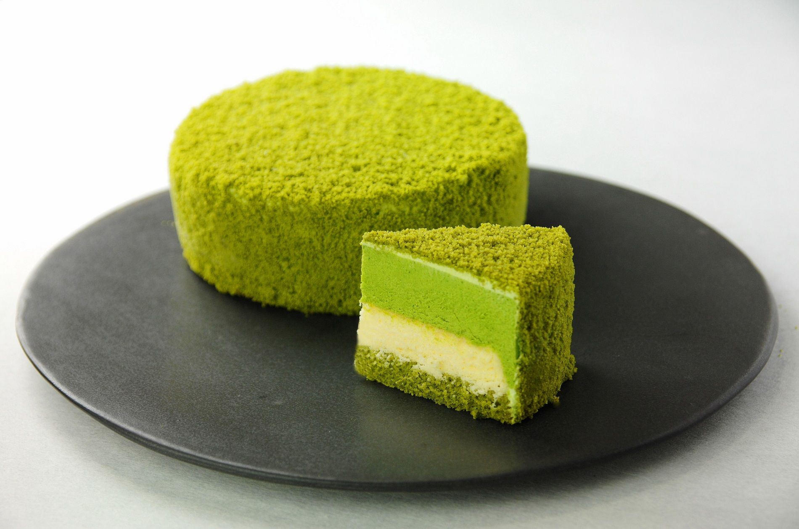
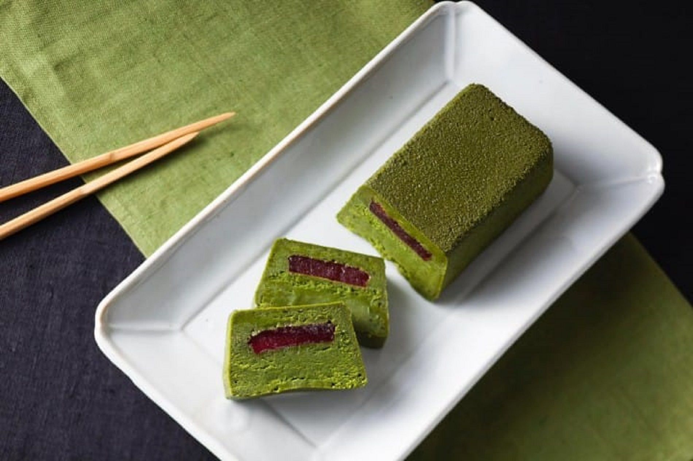

<section class="projects-section bg-light" id="projects">
  <div class="container">
    <!-- Project One Row-->
    <div class="row justify-content-center no-gutters mb-5 mb-lg-0">
      <div class="col-lg-6"></div>
      <div class="col-lg-6">
        <div class="bg-black text-center h-100 project">
          <div class="d-flex h-100">
            <div class="project-text w-100 my-auto text-center text-lg-left">
              <h4 class="text-white">matchakon</h4>
              <p class="mb-0 text-white-50">將所有材料加入抹茶後，在底層鋪上起司蛋奶酥，疊上起司慕斯，像這樣層層不同風味的起司蛋糕，就這樣成了一份味道濃厚口感絲滑的起司蛋糕了。</p>
              <hr class="d-none d-lg-block mb-0 ml-0"/>
            </div>
          </div>
        </div>
      </div>
    </div>
    <!-- Project Two Row-->
    <div class="row justify-content-center no-gutters">
      <div class="col-lg-6"></div>
      <div class="col-lg-6 order-lg-first">
        <div class="bg-black text-center h-100 project">
          <div class="d-flex h-100">
            <div class="project-text w-100 my-auto text-center text-lg-right">
              <h4 class="text-white">matchakon</h4>
              <p class="mb-0 text-white-50">厚實的蛋糕，入口的瞬間抹茶的清香就四散開來。甜度適中，容易入口，即使是初次購買的朋友也可以放心品嘗。除了抹茶外，還有煎茶和大麥茶這兩種口味，不妨將它們送給喜愛日本茶的朋友吧。</p>
              <hr class="d-none d-lg-block mb-0 mr-0"/>
            </div>
          </div>
        </div>
      </div>
    </div>
  </div>
</section>